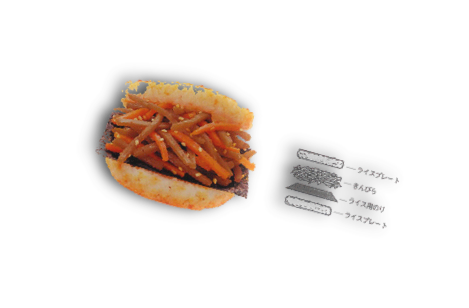

Culture
Film
Syllabi
Literature
Modern Japanese Literature
World of Banned Books
Proletarian Literature in Comparison
Travel Literature
Taish
ō
Literature (developing)
Culture
Postwar and Contemporary Pop Cultures in Japan
Warring Cultures (developing)
Introduction to Japanese Film
Japanese Film of Protest (developing)
Contemporary Japanese Society
Theory
Theorizing Japan
Language
Third Year Japanese